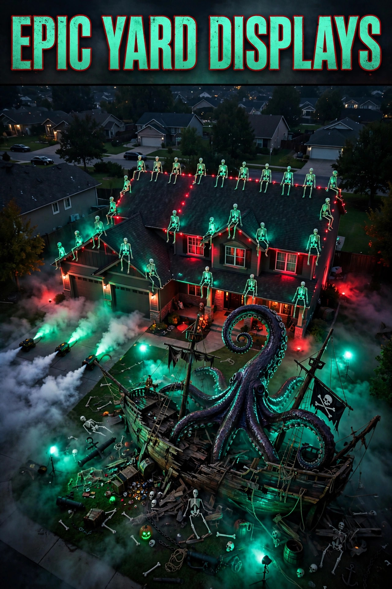

Halloween Yard Decoration Ideas 2026: Outdoor Displays That Wow
Published October 13, 2026 · Updated October 13, 2026 · By EventBuzz Team

Your yard is Halloween's biggest stage — it is the first thing trick-or-treaters see and the last thing neighbours talk about. For Halloween 2026 (Saturday, October 31), these outdoor decoration ideas cover graveyard scenes, floating ghosts, dramatic lighting, porch setups, and the practical stuff: weatherproofing, power, and keeping everything safe after dark. Whether you have a sprawling lawn or a tiny stoop, there is a display here that will stop traffic.
The outdoor rule: design for the street view at night. If it does not read clearly from the pavement in the dark, it is not pulling its weight.
The Graveyard Scene (The All-Time Classic)
- Tombstones with stakes: a set of three to five foam or plastic tombstones, pushed firmly into the lawn at slightly crooked angles. Crooked reads haunted; straight reads cemetery-plot.
- Joke epitaphs: "Here lies Barry M. Deep", "I told you I was sick". Funny tombstones delight kids and adults alike — keep them light, never grim.
- Low fence: a few sticks or a short plastic chain fence around the "graveyard" marks it as a scene rather than scattered decor.
- Ground fog: a fog machine on low behind the tombstones at dusk turns a good graveyard into a legendary one.
- One lantern: a single glowing lantern or LED candle among the stones gives the scene its focal point after dark.
Ghosts, Ghouls & Hanging Figures
- LED hanging ghosts: a trio of light-up ghosts hung from a tree branch or porch at different heights. They glow on their own — zero wiring needed.
- Sheet ghosts: white sheets over tomato cages, balloons, or upturned buckets, with drawn faces, staked in the lawn. A family of three at different heights is the classic for a reason.
- Creepy cloth drapes: black gauze draped over bushes, fences, and railings. One long piece of creepy cloth transforms an entire hedge for a few dollars.
- Tree faces: paper or foam eyes and mouths stuck on trunks turn any tree into a character. Cheap, funny, and kids love them.
- Witch crash scene: striped stockings and shoes sticking out from under a bush or planter, as if a witch crash-landed. Comedy gold for the front yard.
Lighting: What Makes Night Displays Work
- Uplighting: aim spotlights or string lights upward at trees, the house, or big props. Lit from below, everything looks ten times more dramatic.
- Witch hat string lights: glowing hat-shaped lights hung along the porch or fence line — unmistakably Halloween, visible from down the street.
- Path lighting: line the walkway with LED tea-light jars or stake lights. Guests need to see where they step, and a glowing path is pure magic.
- Window silhouettes: black paper bats, cats, and witches taped inside windows, backlit by indoor light. One sheet of card, visible to the whole street.
- Colour discipline: pick one accent colour (purple, green, or orange) and repeat it. Mixed rainbow lighting reads "Christmas confusion".
The Porch: Your Grand Entrance
- Pumpkin staircase: line the steps with pumpkins — carved, painted, and plain mixed. Carved ones get LED candles, never real flames near costumes.
- Wreath: a Halloween wreath with pumpkins, ghosts, or a black cat on the door. It is the first detail visitors notice up close.
- Rocking chair ghost: drape a sheet over a porch chair for an instant seated ghost. Add a hat for personality.
- Welcome mat message: a Halloween doormat or a painted sign ("Enter if you dare", "Beware of the dog... he's friendly, the ghosts aren't").
- Candy station: if you are giving out treats, make the bowl part of the display — a pumpkin candy bowl or a witch-themed cauldron on a small table by the door.
Small Yards & Apartments (Big Impact, Tiny Space)
- Go vertical: hanging ghosts from a balcony, window silhouettes, and a wreath use zero floor space.
- One statement piece: a single great pumpkin display or one glowing ghost beats ten small items crammed on a stoop.
- Light the doorway: string lights around the door frame plus one pumpkin. Five minutes, landlord-friendly.
- Project it: a small projector throwing bats or ghosts onto the building wall turns a tiny space into a show.
Weatherproofing & Power (The Boring Essentials)
- Rain plan: paper and cardboard survive drizzle under a porch, not a downpour. Bring paper decor in if heavy rain is forecast; plastic and foam can stay out.
- Wind: stake everything. Tombstones, ghosts, and cloth all become projectiles in October wind without proper anchoring.
- Outdoor-rated only: extension cords, timers, and lights must be rated for outdoor use. Run cords along edges, tape them down, and keep connections off wet ground.
- Battery vs mains: battery and solar lights avoid cords entirely — ideal for the middle of the lawn. Use mains power for the big statement pieces near the house.
- Timers: a simple outdoor timer means the display lights itself at dusk and sleeps at midnight. Set it once, forget it.
Safety & Neighbour Etiquette
Keep every path, step, and the pavement edge completely clear — no tombstone should ever be a trip hazard for an excited six-year-old in a costume. Use LED candles everywhere outdoors; real flames and dry leaves are a combination to avoid. Keep sound effects at a neighbour-friendly volume after 9 PM, and avoid genuinely terrifying displays on the main trick-or-treat path — scary is fun, traumatising toddlers is not. Finally, take everything down within a few days after Halloween; November skeletons are a different aesthetic.
Frequently Asked Questions
When should I put up outdoor Halloween decorations?
Porch and window decor can go up from mid-October; carved pumpkins only in the final few days so they stay fresh. Paper and foam decorations can start now and simply stay.
How do I protect outdoor decorations from rain?
Use plastic or foam props for exposed areas, keep paper and cardboard under porches or bring them in during heavy rain, and make sure all lights and cords are outdoor-rated.
What is the most impactful cheap yard decoration?
Window silhouettes plus uplighting. One sheet of black card and a spotlight transform how your whole house looks from the street for almost nothing.
How do I power lights in the middle of the yard?
Battery-operated or solar stake lights for mid-lawn pieces; outdoor-rated extension cords for big displays near the house. Never run indoor cords outside, and keep all connections off wet ground.
How scary should my yard be with young trick-or-treaters around?
Keep the main path fun-spooky (ghosts, pumpkins, lights) and save the genuinely scary scenes for a side area or behind a fence. Funny tombstones and cute ghosts delight every age group.
Conclusion
A great yard display is a scene, not a pile: one graveyard or ghost family, dramatic lighting, a glowing path, and a porch that welcomes. Stake it down, light it up, and enjoy being the house everyone photographs on October 31st.
Plan the whole celebration with these guides:
Happy haunting — and Happy Halloween 2026!
Yard Decor Picks
Tombstones, hanging ghosts, creepy cloth and lights — everything for a street-stopping display.


Prices shown at the time of publishing and can change. Links take you to Temu, where shipping and delivery details are shown.